Administrators have the
following privileges
· Add/Delete Administrators
· Add/Delete Machines
· Define Substate colors, groups and maximum durations
· Schedule Reports
|
Step |
Action |
|
1 |
From the Tool Time Tracker User Interface click on File
-Login or click in the Login button in
the tool bar 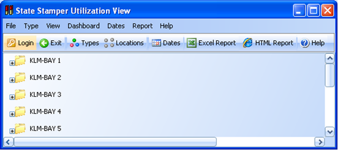 Type your Core Id and password In order to be able to login you should be a Tool Time
Tracker Administrator |
|
2 |
Click on Settings – Administrator or in the Administrator
button in the tool bar 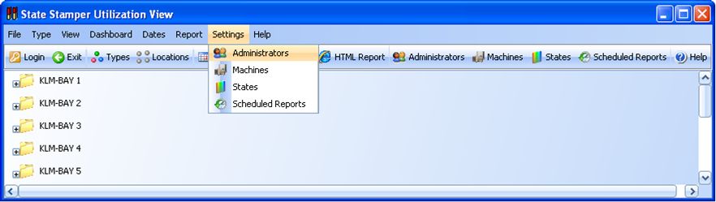 The Administrator window
will appear, right-click to display the pop-up menu with the
operations available 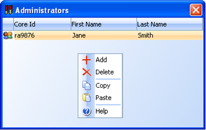 |
|
3 |
Click on Add; in the following dialog enter the Core Id,
First Name, Last Name and E-Mail of the administrator. Tool Time Tracker authenticates users with Freescale
Directory; this has to be a valid Core Id. 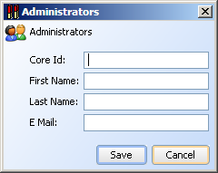 To delete an Administrator just select and click on Delete. |
Only administrators can add machines
|
Step |
Action |
|
1 |
From the Tool Time Tracker User Interface click on Settings
– Machines or on the Machines button in the toolbar 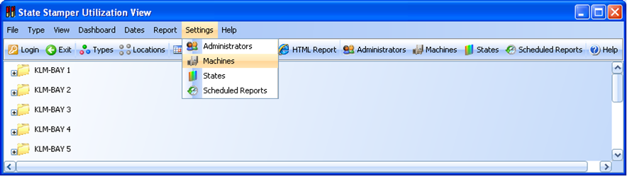 The machines dialog is displayed, right-click on the window
to display the pop-up menu with the operations available 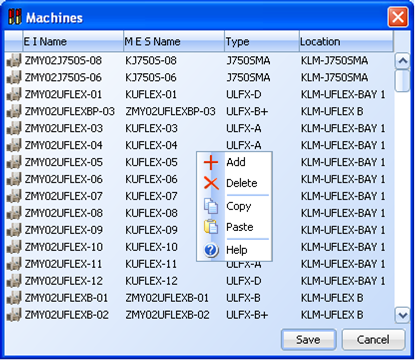 |
|
2 |
Fill the fields and click save 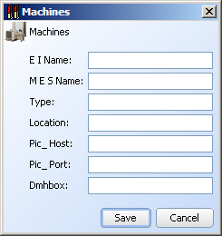 EI Name: Tester Server Name MES Name: Tester Name as assigned in the manufacturing
execution system (e.g. Genesis, PROMIS) Type: Tester Type. e.g.
J750 Location: Location of the tester. e.g. KLM-FAB Pic_Host: PIC server where to send VFEI messages for this
machine. Pic_Port: The port where PIC server is listening. Dmhbox: PIC Mail box where Tool Time Tracker sends messages
for this machine |
|
3 |
To Delete a Machine just select it and click on delete |
Only administrators can define
substates and their attributes
|
Step |
Action |
|
1 |
From the Tool Time Tracker User Interface click on Settings
– States or on the States button in the toolbar The substates dialog is displayed, right-click on the
window to display the pop-up menu with the operations available 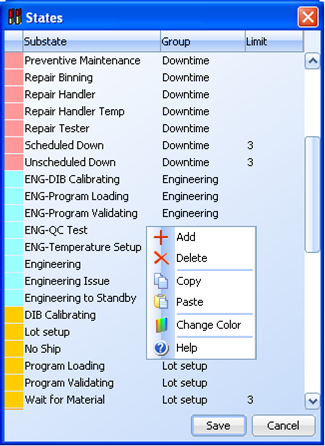 |
|
2 |
Select Add to add a new substate or double click on an
existing substate to edit it. Add/modify the values click save: 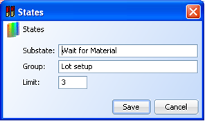 Substate: The substate name Group: The group for the substate. This group will be used
in the Losses and Losses Breakdown reports. Limit: This field is optional. If specified, if a machine
spends more time than the limit entered here, the icon for the machine will
flash on the dashboard. Times are in minutes. |
|
3 |
To change substate colors, highlight one or more substates,
right-click and select Change Color from pop=up menu: 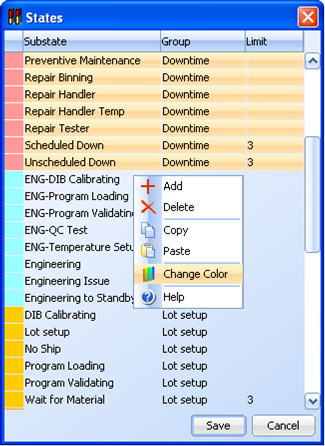 A new window will appear. Change color and click Save. 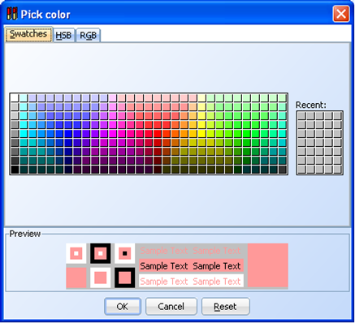 |
|
Step |
Action |
|
1 |
From the Tool Time Tracker User Interface click on Settings
- Scheduled Reports or on the Scheduled
Reports toolbar The Scheduled Reports dialog is displayed, right-click on
the window to display the pop-up menu with the operations available 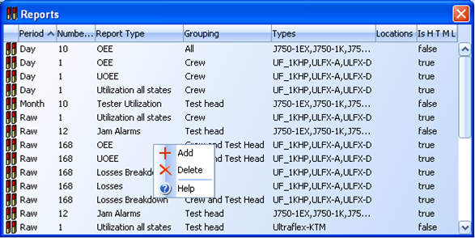 |
|
2 |
Click on Add and fill the fields 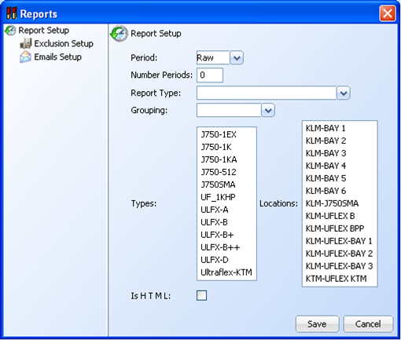 Period: The timeframe of the report. It could be shift,
day, week or month. Number of Periods: Number of periods to include in the
report. For instance if Period = Day and Number of Periods = 3, the report
will include the last 3 days. The shortest Number of Periods is 0.25(15minutes) or 0.5(30minutes).
The report will get last 15minutes or 30minutes from current time Report Type: Display all the supported reports type Grouping: Each Report type has some grouping options. e.g.
Equipment Type, Test Head. Types: The type of equipment that the report includes Locations: The locations that the report includes |
|
3 |
Click on Exclusion Setup if you want to define a specific
equipment to be excluded from the report. 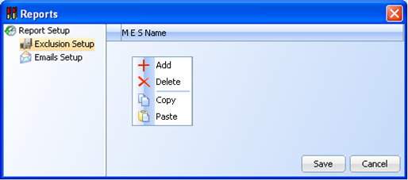 |
|
4 |
Click on Emails Setup if you want the report to be
e-mailed. 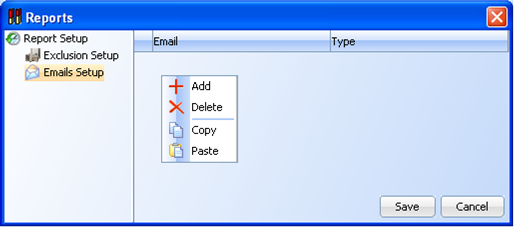 Email: e-mail address. Type: the type of recipient, it can be TO,CC or BCC |
|
5 |
The scheduled reports are also available in the Tool Time
Tracker site for downloading Click on the shift, daily, weekly or monthly reports links
and all the scheduled report for that
report type are displayed 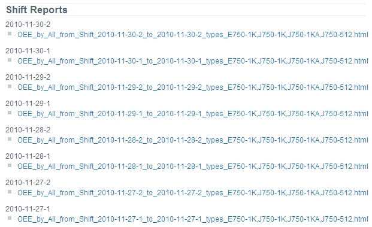 |
The following options are configurable through configuration file conf.txt
|
Variable |
Description |
|
site |
Site name. It will be displayed on the main page |
|
port |
Port where Tool Time Tracker is listening for EPR++
messages. The EI tools should be configured to send the EPR++ messages to
this port |
|
mesPrecedence |
If set to Y and an MES event puts a machine on Scheduled Down, Unscheduled Down or Non Scheduled, only another MES event can take it out of that state |
|
eprPrecedence |
If set to Y EPR events received for durables will transition the durable without validating against the transition table |
|
reportsDirectory |
Path to the directory where the scheduled reports will be stored.
This directory should exist |
|
transferDirectory |
directory for scheduled reports intended to be transferred (CSV reports automatically are published to this folder). This directory should exist |
|
attachmentDirectory |
Path to the directory where the attachment files will be stored. This directory should exist |
|
diamondDirectory |
Directory where EPR++ files for Diamond will be generated. |
|
logEvents |
Whether to log each EPR++ message or not. Values should be Y or N |
|
idleInterval |
Interval in seconds after which a machine will transition
to Standby if it was Productive and no message have been received during this
interval |
|
writeInterval |
.Interval in seconds after which a record will be written
to the data base if no state changes have happened. Records are written to
the data base when there is a state change. Or after writeInterval seconds
without a state change |
|
shifts |
Shift definitions.
It is a list of shifts. Each shift contains: shift ID, start time (HH24:MI:SS
format), end time (HH24:MI:SS format) and the days of the week when the shift
runs. This is a string with either a Y (shift runs) or an N (shift does not
run) for each day of the week starting with Sunday. For example:
shifts=A,06:00:00,18:00:00,YYYYYYY;B,18:00:00,06: 00:00,YYYYYYY |
|
crews |
Crew definitions. It is a list of shifts. Each shift contains: fiscal date (YYYY-MM-DD format), shift and a comma separated of crews working that shift from that fiscal date for an entire cycle. |
|
maxRaw |
Maximum number of days to keep for raw data. At least 1 |
|
maxSummary |
Number of months to keep summarized data. At least 1, default 3 |
|
picHost |
The PIC server where to send VFEI messages Only machine,
event and state info is sent to the PIC. No summing or context variables are
sent. |
|
picPort |
The port where PIC server is listening. |
|
dmhBox |
PIC Mail box where Tool Time Tracker sends messages |
|
OracleExternalDBServer |
the name of a oracle db server to retrieve data from. Used by the "Update Attribute with External Source" Business rule action |
|
OracleExternalUser |
user name to be used by the Oracle external connection. Used by the "Update Attribute with External Source" Business rule action |
|
OracleExternalPassword |
password to be used by the Oracle external connection. Used by the "Update Attribute with External Source" Business rule action |
|
OracleExternalPort |
port of the oracle server external connection. Used by the "Update Attribute with External Source" Business rule action |
|
OracleExternalSID |
The Oracle SID to be used by the Oracle External connection. Used by the "Update Attribute with External Source" Business rule action |
|
eventTime |
it defines what time should be used for the events: server: the server time when the event is received, client: the time contained in the event. By default it is server. |
|
stateChangeTesterID |
Defines a filter for tester events with substates "Parts are Soaking" and "Alarm Recovery" |
|
stateChangeTesterID |
Defines a filter for tester events with substates "Parts are Soaking" and "Alarm Recovery" |
|
sitesFilterByTestProgramFlowId |
Define a filter for TEST_PROGRAM|FLOW_ID|SITES_AVAILABLE When a message with sub-state Test or Retest is received that has the TEST_PROGRAM and FLOW_ID configured the event is going to be stored with the SITES_AVAILABLE configured instead of the SITES_AVAILABLE from the EPR The format of the filter is TEST_PROGRAM|FLOW_ID|SITES_AVAILABLE, the values are separated by the pipe character |.TEST_PROGRAM: the value of the test program before the last underscore "_". a test program like Leopard3_N89D_E3.xls should be in the configuration as Leopard3_N89D if the test program does not contain an underscore then it would not be filtered Example: Leopard3_N89D|FCA|7 where Leopard3_N89D is the test program, this would cover test programs like Leopard3_N89D_E3.xls, Leopard3_N89D_E2A.xls, etc. FCA is the FLOW_ID, and 7 the SITES_AVAILABLE. EPRS with state of Productive and substate of Test or Retest EPRs, with TEST_PROGRAM = Leopard3_N89D and FLOW_ID = FCA will be stored with SITES_AVAILABLE = 7 instead of the the SITES_AVAILABLE from the EPR if there are multiple filters they are separated by commas: Leopard3_N89D|FCA|7,Leopard3_N89D|FHA|6 to disable this filter let it blank. |
|
clientAcknowledgment |
it defines if the clients need acknowledgement from TTT after a message is received or not. Value is boolean type true or false (default).
|
|
genesisHost |
it defines the genesis host IP.
|
|
genesisPort |
it defines port of genesis interface manager.
|
|
genesisSecureID |
it defines the password of genesis inteface manager.
|
|
genesisTxnUserID |
it defines the transaction user id for making genesis transactions
|
|
genesisEmailNotification |
it defines a list of users that will be informed whenever there are issue with genesis interface
|
|
emailServer |
The SMTP server to send e-mails, optional
|
|
fromUser |
The sender name to be used by scheduled reports, optional.
Default value: ToolTimeTracker
|
|
fromAddress |
The sender addrees to be used by scheduled reports, optional.
Default value: tooltimetracker@freescale.com.
|
|
content |
The footer of the e-mail send by scheduled reports, optional.
Default value: The information contained in this email has been classified Freescale Confidential Proprietary
|
|
domain |
The default domain to be used for e-mail recipients that do not specify domain, optional.
Default value: @freescale.com
|
Reload Settings
Administrators
have the option to reload some of the configurations defined in conf.txt as
well as some other configuration options. The reloadSettings operation is
available in File menu
The
configuration options that are reloaded with the reloadSettings option are: